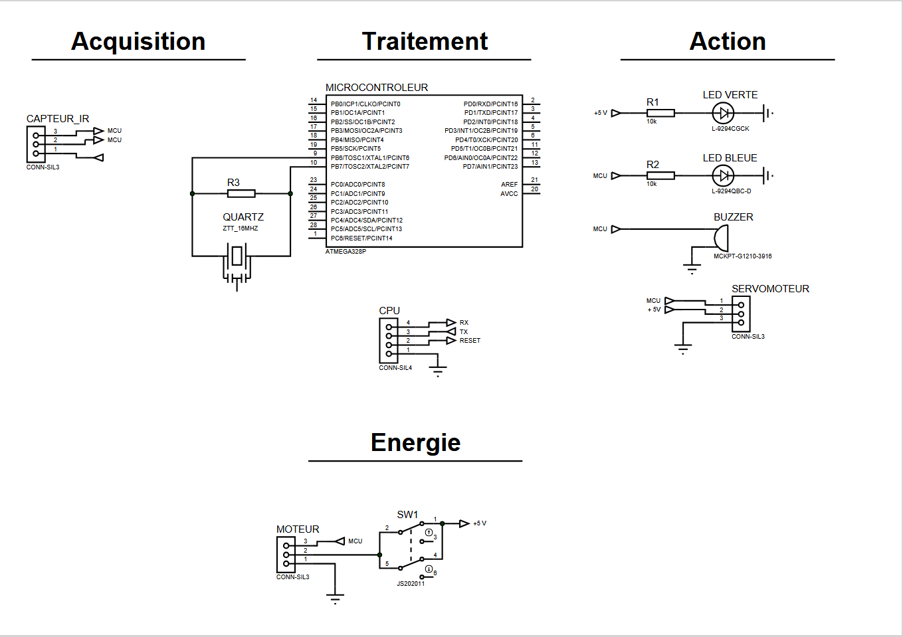
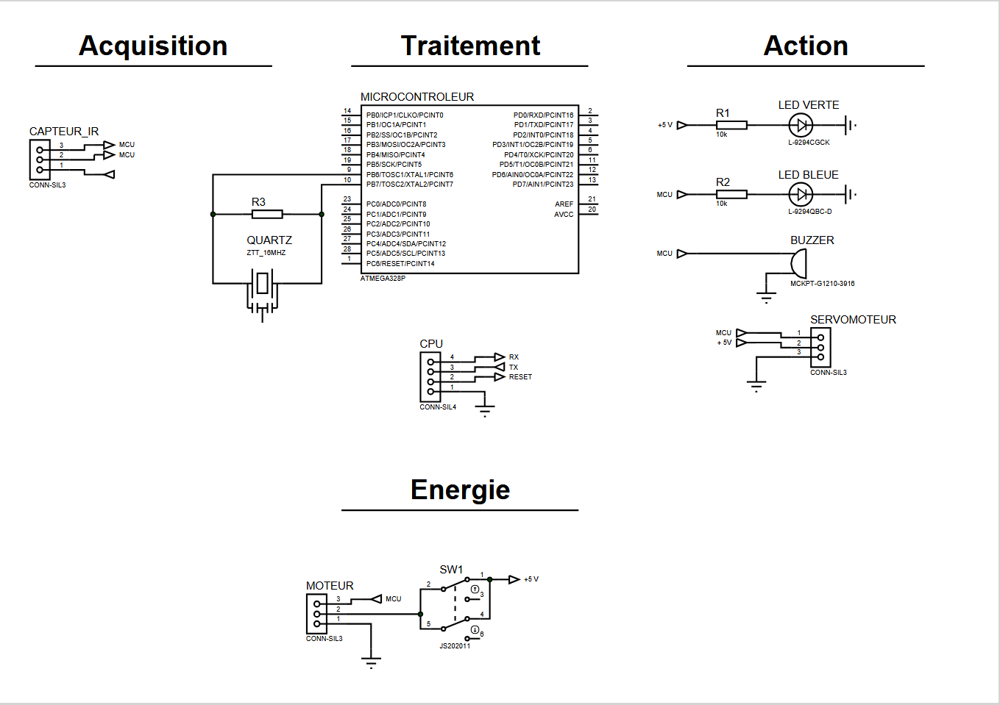

ACADEMIC PROJECTS

Sumo Robot
Sep to Dec 2024
Project Objective
Designed and verified the sensor integration for a tracker robot intended for competitive sumo robot matches. The objective was to push the opponent's robot out of the ring using various sensors and control algorithms.
Project Development Process
The main part of this project was to design and select the appropriate type and number of sensors for optimal detection of an opponent.
To achieve this, we created a Design File to document our choices and explain the working principles of each selected sensor.
Following the design phase, we built prototypes to test our designs. We also programmed an Arduino to convert sensor signals into measurable units.
Concurrently, I assisted the software team with programming the robot's algorithm.
After validating the prototypes, we fabricated the PCB in our university lab and soldered all the SMT (Surface-Mount Technology) components.
Finally, we integrated the sensors onto the sumo robot's PCB and verified their functionality under real match conditions.
All design choices and verification results were documented in a comprehensive report.
Skills Gained
- Improved understanding of sensor integration
- Gained experience working in a team of eight
- Developed skills in PCB design and soldering SMT components
- Enhanced low-level programming skills for sensor integration and algorithm development
Sumo robot with integrated sensors and PCB

Propeller Kart
Jan to Jun 2024
Project Objective
Designed and verified the action components of a propeller-driven kart and the sensor components of its IR remote control. The two systems communicate wirelessly using the NEC protocol.
Project Development Process
My role in this project focused on both the kart's hardware and the remote's software.
I was responsible for the action and sensor components of the kart, which included integrating the propeller motor, a buzzer, and an IR receiver.
After designing and soldering the PCB for the kart, I tested and verified the functionality of these components.
A significant part of my contribution was developing the entire Arduino code for the remote control's microprocessor.
Similar to the project above, all design choices and verification results were documented in a report.
Skills Gained
- Improved understanding of IR communication and protocols
- Gained experience in low-level development for a microprocessor (Arduino)
- Improved technical writing skills for project documentation

 

Propeller-driven kart with its IR control system and PCB